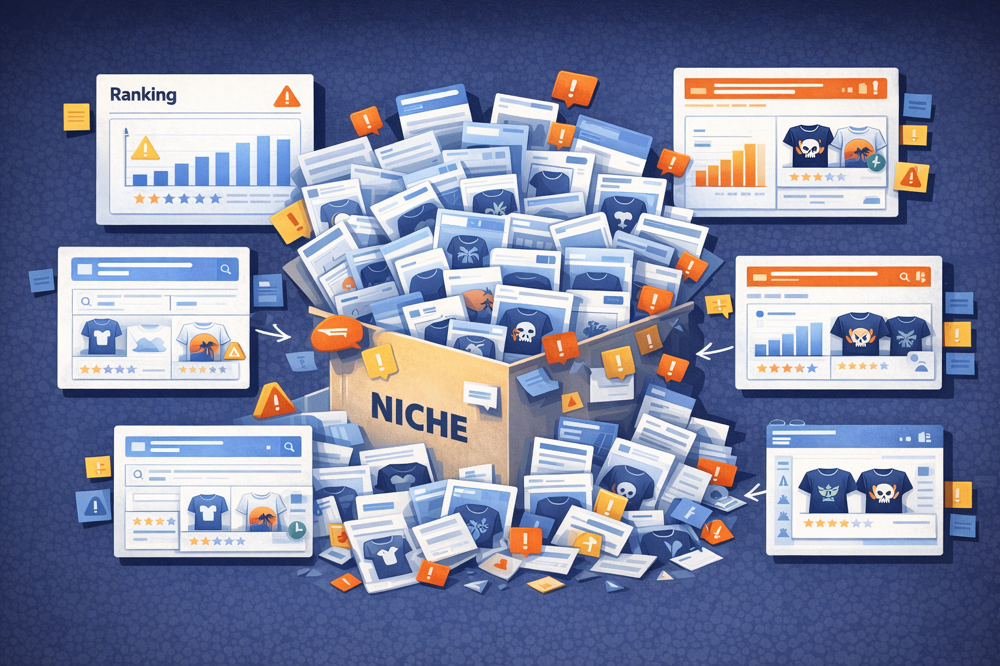
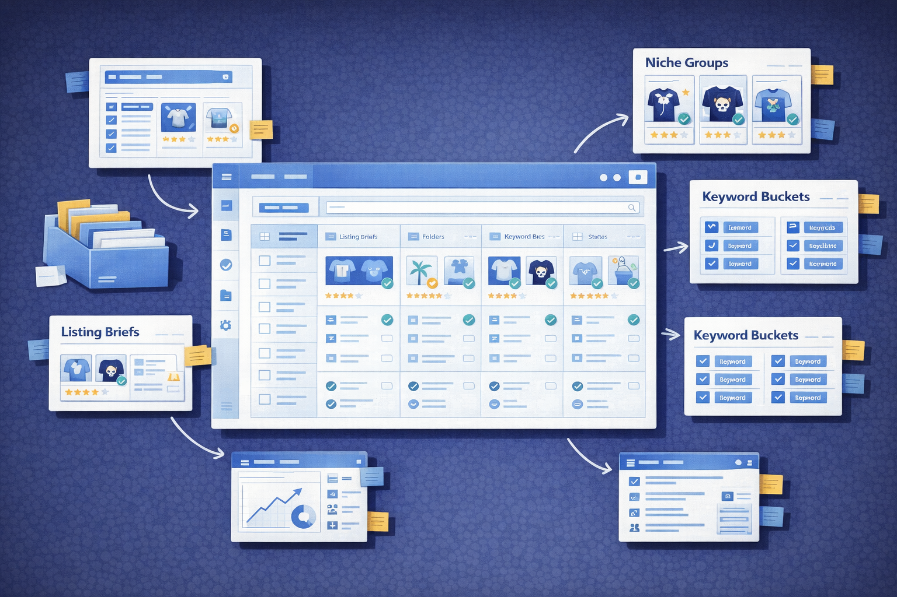
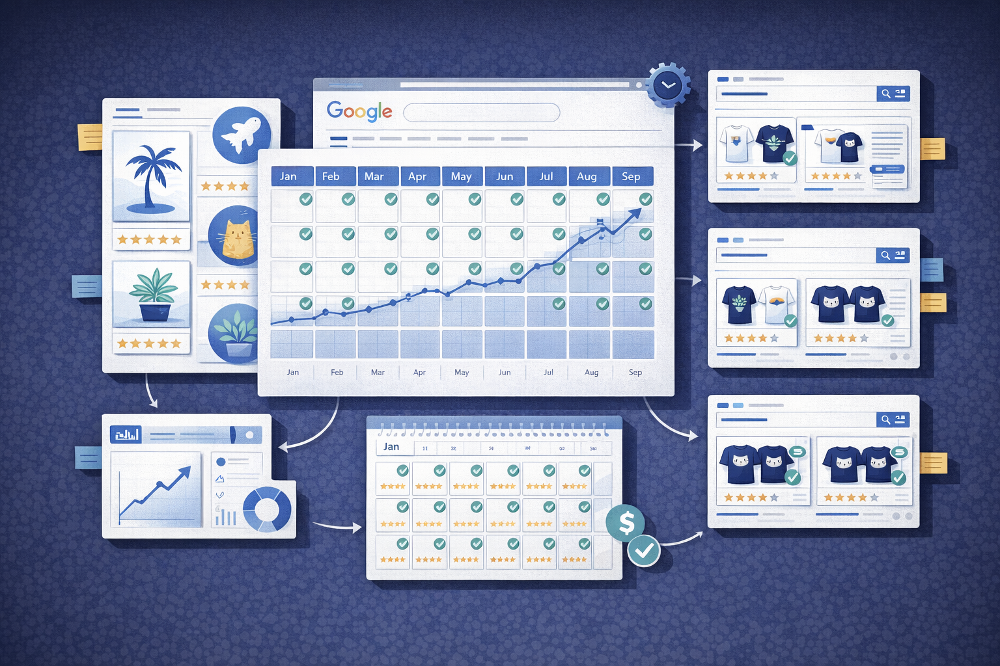
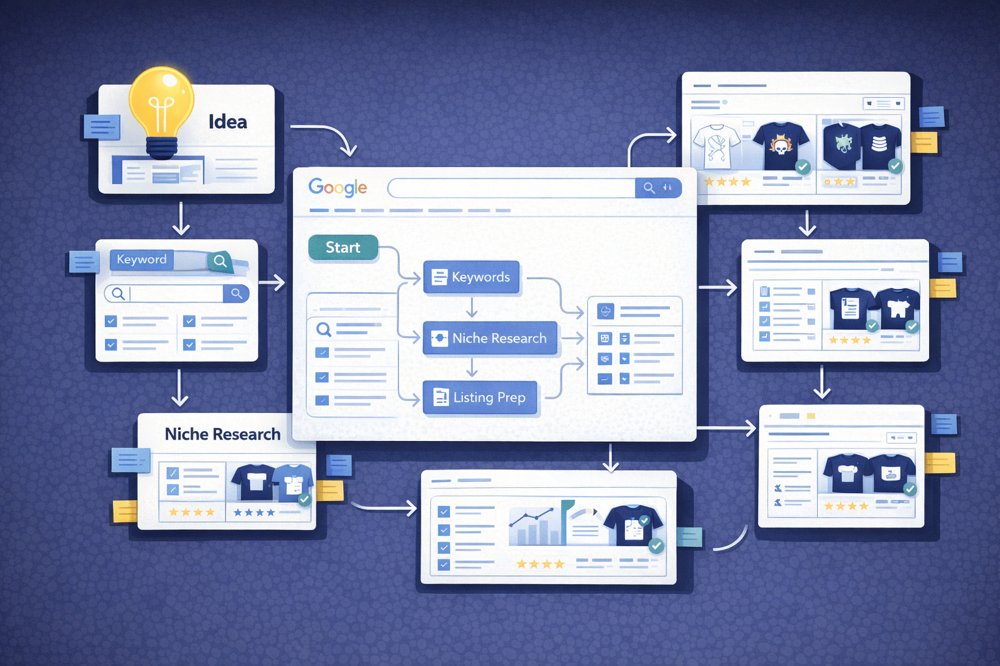
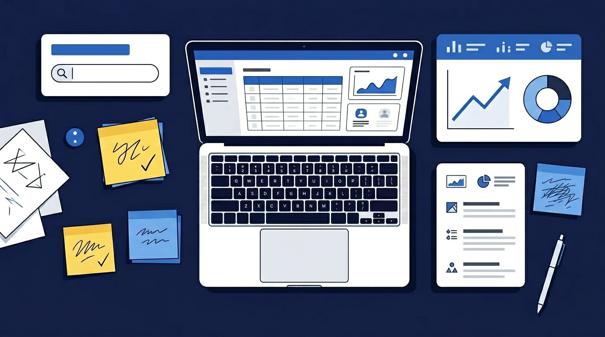

Competition
Learn how to identify if your print-on-demand niche is too saturated, how to evaluate competition vs. demand, and find profitable niche opportunities.
Read Article ->Practical guides for print-on-demand sellers who want to grow smarter, not just harder.






PODTrackerPRO gives you the dashboard to actually implement what you're learning. Start free.